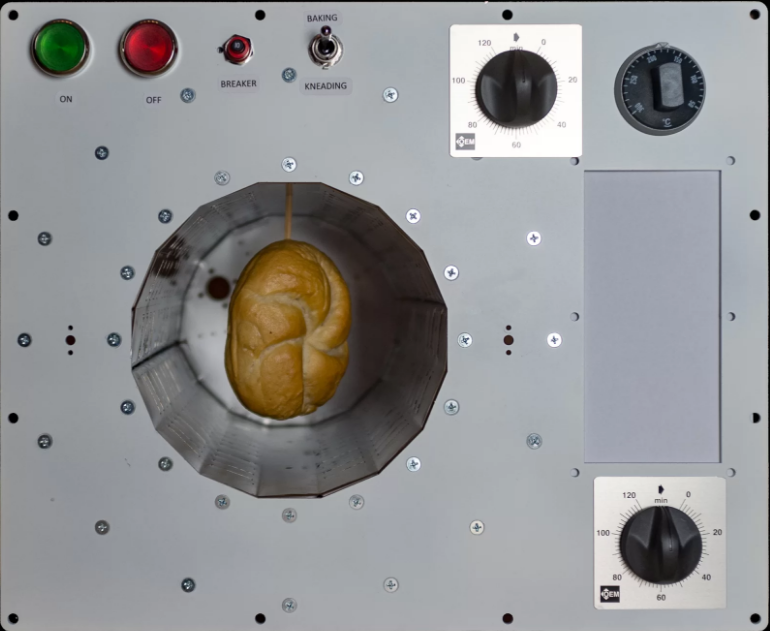
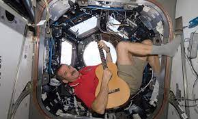

Жизнь на МКС
Еда
Все знают, что космонавты едят суп из тюбиков и разводят водой сухое картофельное пюре. Главное – чтобы не было крошек и капель, ведь они разлетаются по всей станции и могут попасть в электросеть или тонкие приборы, а это опасно. Именно поэтому у астронавтов долго не было, например, свежего хлеба, обходились галетами из специальной муки, и не из пустых опасений. В 1965 году американские астронавты Вирджил Гриссом и Джон Янг, экипаж миссии Gemini 3, тайком пронесли на борт космического аппарата сэндвич. Крошки летали повсюду и чуть не вызвали короткое замыкание. С тех пор хлебу в космосе сказали «Нет», разрешив только лепешки-тортильи.
Но в 2018 году хлеб появится на МКС. Для этого немецкие инженеры разработали печку, прототип которой уже работает.
Секрет – в специальном тесте, из него получается хлеб, который не дает крошек. Понадобился и особенный дизайн печки: она должна работать от слабой сети, ее мощность не должна превышать 250 ватт (на земных кухнях работают электрические духовки мощностью в 2–5 киловатт, то есть вдесятеро больше). Поверхность приборов, используемых на МКС, не должна быть горячее 45°C, поэтому инженеры используют нетеплопроводные материалы, а внутри печки создают слабый вакуум: так вода закипит при более низкой температуре, и нагревать булочку до обычных 200–250 градусов не придется.
Cон
Отбой на станции не строгий, но и Хьюстон, и Москва рекомендуют соблюдать режим, поэтому, как правило, космонавты отходят ко сну в половине десятого по Гринвичу. Спят в одежде, спальных мешках и наушниках с шумоподавлением: вентиляция сильно шумит, поэтому без наушников спать здесь не только сложно, но и вредно для ушей. Так же, как и на Земле, космонавты видят сны, в том числе страшные; многие жалуются на недосып.
Жизнь на МКС – не сахар, а постоянная борьба с отсутствием силы тяжести, неудобствами и неловкостью. На станции тесно, шумно и всегда душно. Нужно экономить еду и воду, каждый день изнурять себя упражнениями, много работать. Развлечений немного: медленный Интернет, привезенные с собой книги, фильмы и музыка, иногда – самодеятельность. Но нет ни одного интервью или видео, в котором человек, побывавший на МКС, жалуется на бытовые неудобства. Космос искупает все.
Cпорт

Отсутствие земного притяжения медленно убивает мышцы членов экипажа МКС, и убило бы совсем, если бы не ежедневные тренировки, которые космонавты не пропускают даже по выходным. Кроме атрофии мышц, микрогравитация грозит и потерей вещества костей, что на Земле может обернуться их повышенной ломкостью. Симптомы у посткосмического истончения костей похожи на земной остеопороз и очень неприятны. Бороться с ним помогают дополнительный кальций в рационе и опять-таки физкультура.
Спортивных снарядов на МКС четыре: две беговые дорожки, велотренажер и вакуумный тренажер-штанга.
Развлечения
 Космонавты на борту Международной космической станции проводят большую часть времени в работе, экспериментах и небольших паузах для принятия пищи, но при этом и у них существуют свои формы досуга. Так, командир очередного экипажа МКС Крис Хэдфилд, находясь в невесомости, перепел песню Дэвида Боуи «Space Oddity» - причем отснятый им видоклип моментально сделал космонавта знаменитостью на Youtube собрал другие фото-примеры того, как отдыхают члены экипажей МКС